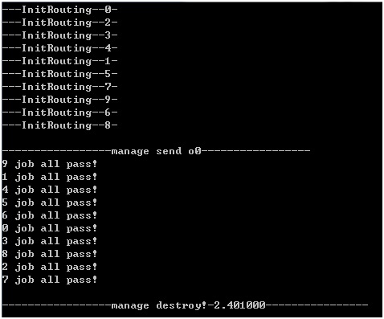
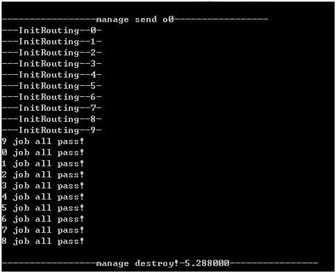
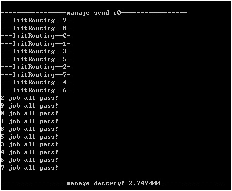
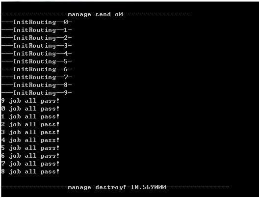
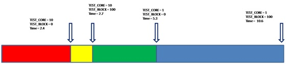
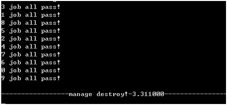

Today, some students asked me: how does Amdahl theorem apply to the development of parallel software? This is a very good question. Because in the development of parallel software, we are often trapped in the crash caused by various forms of synchronization. Without the energy to analyze whether parallel really brings benefits. So that in most cases, we can only rudely give up parallel development. Therefore, the valuable wealth of Amdahl theorem is gradually forgotten. I hope today's short article can help you get some inspiration about parallel development.
This is based on the prfesa example in Pelagia. You can find this example in "src/profesa.c" in the latest version of Pelagia.
Let's first recall the contents of Amdahl 's theorem. On the wiki, he defined it as follows: " Amdahl 's law is one of the important quantitative principles of computer system design, which was first proposed by Amdahl, the main designer of IBM 360 series machines in 1967. The law refers to the degree of system performance improvement that can be achieved by adopting a faster execution mode for a certain component in the system, which depends on the frequency of using this execution mode or the proportion of the total execution time.
Amdahl gives the following formula: S = 1 / (1 - a + a / n))
Among them, a is the proportion of parallel computing part, n is the number of parallel processing nodes. In this way, when 1 - a = 0, the maximum acceleration ratio is s = n; when a = 0, the minimum acceleration ratio is S = 1; when n→∞, the limit acceleration ratio is S→1 / (1 - a), which is the upper limit of the acceleration ratio. For example, if the serial code accounts for 25% of the whole code, the overall performance of parallel processing cannot exceed 4. This formula has been accepted by academia and is called Amdahl law.".
First, two macros are created to represent the variables N and a in the theorem. They are respectively:
#define TEST_CORE 10
#define TEST_BLOCK 100
TEST_CORE represents the number of concurrent cores. TEST_BLOCK indicates the length of blocking time. Because the serial part of a in Amdahl 's theorem is difficult to quantify in software engineering. Therefore, test block is used to represent the running time of parallelizable parts. Although a is very difficult to quantify, we can deduce it in the later part according to the formula.
The code of block is as follows:
//block
void* p = malloc(1024 * 1024 * 64);
short* s = (short*)p;
for (long long i = 0; i < TEST_BLOCK; i++) {
*s = plg_crc16(p, 1024 * 64);
}
free(p);
//block
When TEST_BLOCK is 0, it can be approximately seen that the whole system is in a parallel state without users. Only the sum of parallel and serial consumption in the system state. Because when TEST_BLOCK is 0, the parallel and serial consumption of all systems is generated by the system API.
Set TEST_BLOCK to 0 and TEST_CORE to 10 to get the system running time of 2.4.
Set TEST_BLOCK to 0 and TEST_CORE to 1 to get the system running time of 5.3.
Set TEST_BLOCK to 100 and TEST_CORE to 10 to get the system running time of 2.7.
Set TEST_BLOCK to 100 and TEST_CORE to 1 to get the system running time of 10.6.
Summarize the data as follows:
The data with TEST_BLOC of 0 is substituted into Amdahl formula. We can get the proportion of parallel computing when TEST_BLOCK is 0. The calculation is as follows:
1/(1/(1-a+a/10))=2.4/5.3
a = 0.6
When TEST_BLOCK is 0 and TEST_CORE is 10, the parallel acceleration ratio of the system is
S = 1/(1-0.6+0.6/10) = 2.17
Similarly, we can get a = 0.83 and S = 3.9 when TEST_BLOCK is 100.
When the proportion of parallel part in software engineering is high, a good speedup ratio can be obtained. When the proportion of software parallel part is low. The acceleration ratio tends to 1, and the acceleration effect brought by parallel tends to 0.
Finally, it should be noted that Pelagia can adjust the number of threads, but it is still limited by the system hardware. Because the number of hardware cores of the tester used is 4. When TEST_CORE is 4 and TEST_BLOCK is 100, the time obtained is 3.3. It is very close to the acceleration effect of TEST_CORE of 10.
The attached codes is as follows
#include <stdlib.h>
#include <stdio.h>
#include <string.h>
#include "prfesa.h"
#include "pelagia.h"
#include "ptimesys.h"
#include "pcrc16.h"
typedef struct _PfsParam
{
void* pEvent;
short i;
short dmage;
short o;
}*PPfsParam, PfsParam;
#define TEST_POINT 10
#define TEST_COUNT 100
#define TEST_CORE 4
#define TEST_BLOCK 100
static int InitRouting(char* value, short valueLen) {
valueLen += 0;
PPfsParam pParam = (PPfsParam)value;
printf("---InitRouting--%d-\n", pParam->i);
char table[256] = { 0 };
sprintf(table, "t%d", pParam->i);
int count = TEST_COUNT;
plg_JobSet(table, strlen(table), "count", strlen("count"), &count, sizeof(count));
return 1;
}
static int TestRouting(char* value, short valueLen) {
//routing valueLen unused parameter
valueLen += 0;
PPfsParam pParam = (PPfsParam)value;
for (int i = 0; i < TEST_POINT; i++)
{
int count;
char table[10] = { 0 };
sprintf(table, "t%d", i);
unsigned int len = 0;
void* ptr = plg_JobGet(table, strlen(table), "count", strlen("count"), &len);
if (ptr) {
count = *(int*)ptr;
free(ptr);
if (count < 0) {
plg_EventSend(pParam->pEvent, NULL, 0);
printf("%d job all pass!\n", pParam->o);
return 1;
}
}
}
//block
void* p = malloc(1024 * 1024 * 64);
short* s = (short*)p;
for (long long i = 0; i < TEST_BLOCK; i++) {
*s = plg_crc16(p, 1024 * 64);
}
free(p);
//block
int count = 0;
char table[10] = { 0 };
sprintf(table, "t%d", pParam->i);
unsigned int len = 0;
void* ptr = plg_JobGet(table, strlen(table), "count", strlen("count"), &len);
if (ptr) {
count = *(int*)ptr;
free(ptr);
count -= pParam->dmage;
plg_JobSet(table, strlen(table), "count", strlen("count"), &count, sizeof(count));
if (count < 0) {
//all pass
plg_EventSend(pParam->pEvent, NULL, 0);
printf("%d job all pass!\n", pParam->o);
} else {
int l = rand();
int c = 0;
for (int i = 0; i < TEST_POINT; i++) {
c = l % TEST_POINT;
if (pParam->i == c) {
continue;
} else {
break;
}
}
char order[10] = { 0 };
sprintf(order, "o%d", c);
pParam->i = c;
pParam->dmage = rand() % 1 ? 2 : 5;
plg_JobRemoteCall(order, strlen(order), (char*)pParam, sizeof(PfsParam));
plg_JobSetDonotFlush(1);
}
}
//printf("---TestRouting--%d--%d--\n", pParam->i, count);
return 1;
}
void PRFESA(void) {
unsigned long long time = plg_GetCurrentMilli();
void* pManage = plg_MngCreateHandle(0, 0);
void* pEvent = plg_EventCreateHandle();
plg_MngFreeJob(pManage);
for (int i = 0; i < TEST_POINT; i++) {
char order[10] = { 0 };
sprintf(order, "i%d", i);
plg_MngAddOrder(pManage, order, strlen(order), plg_JobCreateFunPtr(InitRouting));
char table[10] = { 0 };
sprintf(table, "t%d", i);
plg_MngAddTable(pManage, order, strlen(order), table, strlen(table));
}
for (int i = 0; i < TEST_POINT; i++) {
char order[10] = { 0 };
sprintf(order, "o%d", i);
plg_MngAddOrder(pManage, order, strlen(order), plg_JobCreateFunPtr(TestRouting));
char table[10] = { 0 };
sprintf(table, "t%d", i);
plg_MngAddTable(pManage, order, strlen(order), table, strlen(table));
}
plg_MngPrintAllStatus(pManage);
plg_MngAllocJob(pManage, TEST_CORE);
plg_MngStarJob(pManage);
printf("\n-----------------manage create-----------------\n");
for (int i = 0; i < TEST_POINT; i++) {
char order[10] = { 0 };
sprintf(order, "i%d", i);
PfsParam param;
param.i = i;
param.pEvent = pEvent;
plg_MngRemoteCall(pManage, order, strlen(order), (char*)¶m, sizeof(PfsParam));
}
for (int i = 0; i < TEST_POINT; i++) {
char order[10] = { 0 };
sprintf(order, "o%d", i);
PfsParam param;
param.i = i;
param.o = i;
param.pEvent = pEvent;
param.dmage = 1;
plg_MngRemoteCall(pManage, order, strlen(order), (char*)¶m, sizeof(PfsParam));
}
printf("\n-----------------manage send o0-----------------\n");
//Because it is not a thread created by ptw32, ptw32 new cannot release memory leak
for (int i = 0; i < TEST_POINT; i++) {
plg_EventWait(pEvent);
unsigned int eventLen;
void * ptr = plg_EventRecvAlloc(pEvent, &eventLen);
plg_EventFreePtr(ptr);
}
plg_EventDestroyHandle(pEvent);
plg_MngDestoryHandle(pManage, 0, 0);
printf("\n-----------------manage destroy!-%f----------------\n", (double)(plg_GetCurrentMilli() - time) / 1000);
}